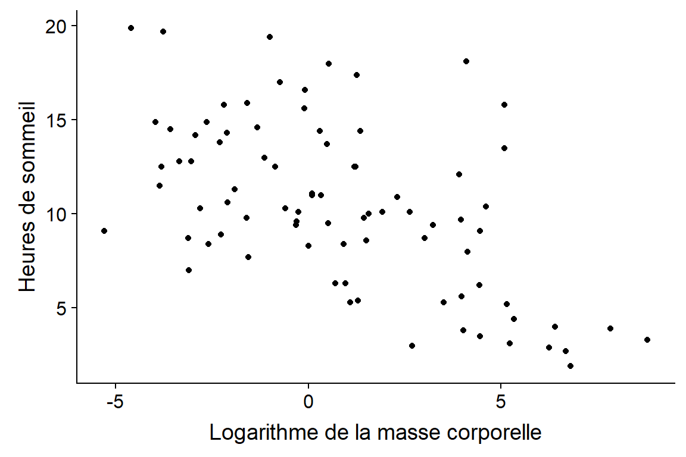

Moyenne, variance et écart-type
Moyenne
Prenons une série de données \(x_1\), \(x_2\), …, \(x_n\) provenant de \(n\) observations d’une variable \(x\).
La moyenne de \(x\) est notée \(\bar{x}\) et définie comme:
\[\bar{x} = \frac{x_1 + x_2 + ... + x_n}{n} = \frac{\sum_{i = 1}^{n} x_i}{n}\]
Moyenne
La moyenne constitue le “centre de gravité” d’une distribution.

Écart à la moyenne

La somme des écarts à la moyenne est égale à zéro.
Variance
La moyenne du carré des écarts à la moyenne est la variance, une mesure de la dispersion des données.
\[\sigma_x^2 = \frac{\sum_{i = 1}^{n} (x_i - \bar{x})^2}{n}\]
Écart-type
La racine carrée de la variance, ou écart-type, a l’avantage d’avoir les même unités que les données originales (ex.: cm plutôt que cm\(^2\)).
\[\sigma_x = \sqrt{\frac{\sum_{i = 1}^{n} (x_i - \bar{x})^2}{n}}\]
Note: Lorsqu’on veut estimer la variance ou l’écart-type d’une population à partir d’un échantillon, on divise par \(n-1\) plutôt que \(n\). Plus de détails au prochain cours.
Visualisation de la moyenne et de l’écart-type

- La moyenne et l’écart-type ne nous indiquent pas que la distribution est asymétrique.
Relation entre deux variables numériques
Nuage de points
Exemple: Jeux de données sur le sommeil de 83 mammifères, provenant de l’étude de Savage et West (2004) et inclus avec le package ggplot2 dans R.

Covariance
- Prenons deux variables \(x\) et \(y\) mesurées sur les mêmes unités d’observation.
- On se souvient que la variance est la moyenne du carré des écarts à la moyenne d’une variable.
\[\sigma_x^2 = \frac{\sum_{i = 1}^{n} (x_i - \bar{x})^2}{n}\]
- La covariance est la moyenne du produit des écarts de \(x\) et \(y\) à leur moyenne respective.
\[\sigma_{xy} = \frac{\sum_{i = 1}^{n} (x_i - \bar{x}) (y_i - \bar{y})}{n}\]
Covariance
\[\sigma_{xy} = \frac{\sum_{i = 1}^{n} (x_i - \bar{x}) (y_i - \bar{y})}{n}\]
- Lorsque les variables tendent à être simultanément au-dessus (ou sous) leur moyenne, la covariance est positive. Lorsque les écarts tendent à être de signe opposé, la covariance est négative.
Corrélation
- Il est pratique de normaliser la covariance en la divisant par le produit des écarts-type. Le résultat est le coefficient de corrélation de Pearson.
\[\rho_{xy} = \frac{\sigma_{xy}}{\sigma_x \sigma_y}\]
- Le coefficient de corrélation a l’avantage d’être toujours compris entre -1 et 1.
Corrélation
Le coefficient de corrélation de Pearson mesure l’association linéaire entre deux variables. Une relation linéaire exacte a une corrélation de 1 (si positive) ou -1 (si négative).
Deux variables sont dites indépendantes si connaître l’une n’apporte aucune information sur l’autre.
Pour deux variables indépendantes, la corrélation est zéro. Cependant, l’inverse n’est pas nécessairement le cas.
Corrélation
Coefficients de corrélation pour différents nuages de points.
 Source: Wikipédia
Source: Wikipédia
Corrélation
Dans notre exemple, la corrélation entre les heures de sommeil et la masse corporelle des mammifères est de -0.57.